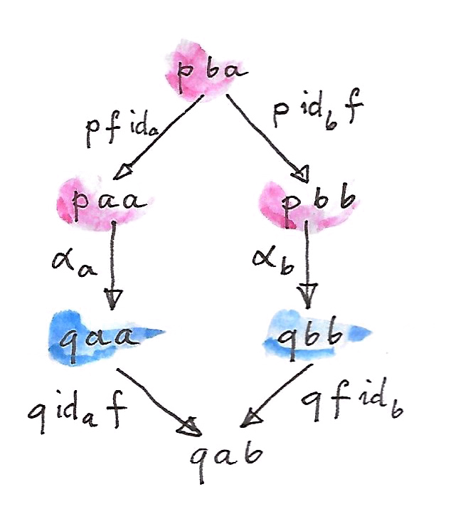
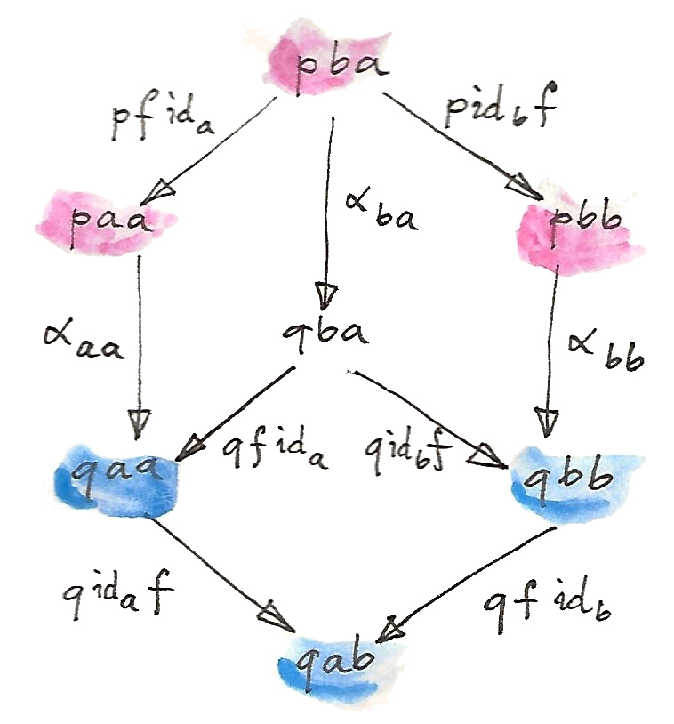
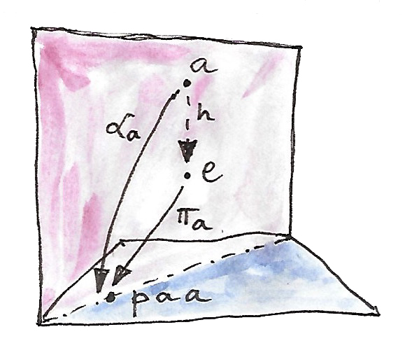

27 EndsและCoends (Sketch)
ได้มีวิธีการคิดหลากหลายที่ว่าเราอาจจะนำมาคิดกับmorphismsในcategoryแต่เราสามารถเห็นด้วยทั้งหมดว่าถ้าได้มีmorphismจากวัตถุ\(a\)ไปยังวัตถุ\(b\)แล้วกันนั้น สองวัตถุนั้นในแบบใดแบบหนึ่งที่“มีความสัมพันธ์กัน” morphismคือในมุมหนึ่งคือข้อพิสูจน์ของความสัมพันธ์นี้ มันจึงเห็นได้ชัดเจนในcategoryแบบposetใดๆก็ตามที่morphismคือความสัมพันธ์กัน โดนทั่วไปแล้ว ได้มี“การพิสูจน์”ที่หลากหลายของความสัมพันธ์เดียวกันระหว่างสองวัตถุ การพิสูจน์เหล่านี้ก่อให้เกิดsetที่เราเรียกได้ว่าhom-set ในตอนที่เราทำให้วัตถุมีความหลากหลาย เราได้การโยงจากคู่ของวัตถุไปยังsetของ”การพิสูจน์ต่างๆ” การโยงแบบนี้เป็นแบบfunctor(ที่เป็นแบบcontravariantในargumentแรกและcovariantในตัวที่สอง) เราสามารถมองที่มันในฐานะความสัมพันธ์ในระดับกว้างระหว่างวัตถุในcategory ความสัมพันธ์แบบนี้นั้นถูกอธิบายโดยhom-functorอย่าง
\[ \textbf{C}(-, =) :: \textbf{C}^{op}\times{}\textbf{C} \to \textbf{Set} \]
โดยทั่วไปแล้ว ในfunctorใดๆก็ตามเหมือนแบบนี้อาจจะถูกตีความในฐานะการก่อตั้งความสัมพันธ์ระหว่างวัตถุในcategory ความสัมพันธ์ก็อาจจะเกี่ยวข้องกับสองcategoryที่ไม่เหมือนกัน\(\textbf{C}\)และ\(\textbf{D}\) functorที่อธิบายความสัมพันธ์แบบนี้ มีsignatureดังต่องไปนี้และถูกเรียกว่าprofunctorว่า
\[ p :: \textbf{D}^{op}\times{}\textbf{C} \to \textbf{Set} \]
นักคณิตศาสตร์บอกว่านั้นมันคือprofunctorจาก\(\textbf{C}\)ไปยัง\(\textbf{D}\)(สังเกตการกลับด้านของมัน)และใช้ลูกศรที่ถูกกาในฐานะสัญลักษณ์สำหรับมันว่า
\[ \textbf{C} \nrightarrow \textbf{D} \]
คุณสามารถคิกถึงprofunctorในฐานะความสัมพันธ์ที่เกี่ยวกับการพิสูจน์ระหว่างวัตถุของ\(\textbf{C}\)และวัตถุของ\(\textbf{D}\)ที่สมาชิกต่างของsetเป็นสัญลักษณ์ของการพิสูจน์ของความสัมพันธ์ ถ้า\(p \ a \ b\)นั้นว่าง ก็หมายความว่าไม่ได้มีความสัมพันธ์ระหว่าง\(a\)และ\(b\) จงจำได้ว่าความสัมพันธ์ไม่จำเป็นต้องมีความสมมาตร
อีกวิธีคิดที่มีประโยชน์คือการgeneralizeของแนวคิดที่ว่าendofunctorคือภาชนะ ค่าของprofunctorของtype\(p \ a \ b\)อาจจะถูกพิจารณาเป็นภาชนะของ\(b\)ต่างๆที่มีสมาชิกของtype\(a\)เป็นkey โดนเฉพาะเช่นสมาชิกของhom-profunctorคือfunctionจาก\(a\)ไปยัง\(b\)
ในHaskell profunctorนั้นถูกนิยามในฐานะconstructorของtypepแบบสองargumentที่มาคู่กับmethodที่ถูกเรียกว่าdimapที่liftsคู่ของfunctions ในส่วนแรกนั้นไปยังในทิศทางที่“ผิด”
class Profunctor p where
dimap :: (c -> a) -> (b -> d) -> p a b -> p c dความเป็นfunctorของprofunctorบอกเราว่าถ้าเรามีข้อพิสูจน์ที่aนั้นมีความสัมพันธ์กันb แล้วเราก็จะมีข้อพิสูจน์ว่าcนั้นมีความสัมพันธ์กันd ตราบเท่าทีมีmorphismจากcไปยังaและอีกตัวหนึ่งจากbไปยังd หรือเราอาจจะคิดของfunctionแรกในฐานะการแปลงkeyต่างๆตัวใหม่ไปยังkeyต่างๆตัวเก่า และfunctionที่สองในฐานะการแปลงเนื้อหาของภาชนะ
สำหรับprofunctorsกระทำภายในcategoryหนึ่ง เราสามารถดึงข้อมูลค่อนข้างมากจากสมาชิกแนวทแยง(diagonal)ของtype\(p \ a \ a\) เราสามารถพิสูจน์ว่า\(b\)นั้นมีความสัมพันธ์ของ\(c\) ตราบเท่าที่เรามีคู่ของmorphismsอย่าง\(b\to a\)และ\(a\to c\) ดีไปกว่านี้น เราสามารถใช้morphismเดี่ยวของการเข้าหาค่าที่อยู่นอกจากค่าในแนวทแยง ตัวอย่างเช่น ถ้าเรามีmorphism\(f::a\to b\)เราสามารถยกpairของ\(\langle f,\operatorname{id}_b\rangle\)ไปยังจาก \(p \ b\ b\)ไปยัง\(p \ a \b\)คือ
dimap f id (p b b) :: p a bหรือเราสามารถยกpairของ\(\langle \operatorname{id}_a,f\rangle\)ไปยังจาก\(p \ a \ a\)ไปยัง\(p \ a \b\)คือ
dimap id f (p a a) :: p a b27.1 การแปลงแบบDinatural
เนื่องจากว่าprofunctorsคือfunctors เราสามารถนิยามการแปลงแบบธรรมชาติระหว่างพวกมันในรูปแบบมาตรฐาน แต่ในหลายกรณีมันดีพอแล้วในการนิยามการโยงระหว่างสมาชิกแนวทแยงของสองprofunctor การแปลงแบบนี้ถูกเรียกว่าการแปลงแบบdinatural โดนที่มันบรรลุเงื่อนไขของการสลับสุ่มที่แสดงถึง สองวิธีการที่เราเชื่อมสมาชิกแนวทแยงไปยังส่วนที่ไม่ได้เป็ยแบบแนวทแยง แปลงแบบdinaturalระหว่างสองprofunctors\(p\)และ\(q\)ที่คือสมาชิกของcategoryของfunctorอย่าง\([\textbf{C}^{op}\times{}\textbf{C}, \textbf{Set}]\)
\[ \alpha_a ::: p\ a\ a \to q\ a\ a \]
ที่ก็diagramดังต่อไปนี้commutes สำหรับfunction\(f::a\to b\)ใดๆก็ตาม

สังเกตว่าสิงนี้นั้นอ่อนกว่าอย่างแน่นอนเมื่อเทียบกับเงื่อนไขความเป็นธรรมชาติ ถ้า\(\alpha\)นั้นคือการแปลงแบบธรรมชาติใน\([\textbf{C}^{op}\times{}\textbf{C}, \textbf{Set}]\) diagramข้างบนนี้อาจจะถูกสร้างจากสองsquaresของความเป็นธรรมชาติและหนึ่งเงื่อนไขของความเป็นfunctor(profunctor\(q\)นั้นคงไว้ซึ่งการประกอบกัน)

สังเกตว่าส่วนประกอบของการแปลงแบบธรรมชาติ\(\alpha\)ใน\([\textbf{C}^{op}\times{}\textbf{C}, \textbf{Set}]\) นั้นถูกกำหนดโดยคู่ของวัตถุ\(\alpha_{ab}\)การแปลงแบบdinaturalในอีทางหหนึ่งนั้นถูกกำหนดโดยวัตถุเดียว เนื่องด้วยว่ามันแค่โยงสมาชิกแนวทแยงของprofunctorsนั้น
27.2 Ends
เรานั้นพร้อมแล้วในการที่จะขยับจาก”algebra”ไปยังในสิ่งที่อาจจะถูกพิจารณาให้เป็น”calculus”ของทฤษฎีcategory calculusของends(และcoends)ยืมแนวคิดและบางเครื่องหมายจากcalculusดั้งเดิม โดยเฉพาะเช่นการที่coendอาจจะถูกเข้าใจในฐานะการบวกกันแบบไม่มีที่สิ้นสุดหรือเป็นการintegrate ในที่endนั้นคล้ายกับการคูณแบบไม่มีที่สิ้นสุด ได้มีแม้กระทั้งบางอย่างที่เหมือนfunction deltaของDirac
endคือการการgeneralizeของlimit ที่functorถูกแทนที่ด้วยprofunctor แทนที่จะเป็นcone เรามีwedge ฐานของwedgeนั้นสร้างมาจากสมาชิกแนวทแยงของprofunctor\(p\) ยอดของwedgeคือวัตถุ(ในที่นี้คือsetเนื่องด้วยเราจะพิจารณาถึงprofunctorsที่มีค่าเป็น\(\textbf{Set}\)) แบะด้านข้างคือชุดของfunctionsที่โยงยอดของมันไปยังฐานของมัน
คุณอาจจะคิดถึงชุดนี้ในฐานะfunctionแบบpolymorphicหนึ่งๆ(functionที่polymorphicในtypeของการreturnของมัน)
\[ \alpha :: \forall a\ .\ \operatorname{apex} \to p\ a\ a \]
ไม่เหมือนกับcones ภายในwedgeเราไม่มีfunctionsใดๆก็ตามที่จะเชื่อมจุดต่างๆของฐาน แต่ในที่เราได้เห็นไปก่อนหน้านี้ ถ้้าเรามีmorphismใดๆก็ตามอย่าง\(f::a\to b\)ใน\(\textbf{C}\) เราสามารถเชื่อมทั้ง\(p\ a\ a\)และ\(p\ b\ b\)ไปยังsetร่วม\(p\ a\ b\) เรานั้นย้ำว่าdiagramเหล่านี้นั้นcommute

นี้ถูกเรียกว่าเงื่อนไขของwedgeที่สามารถถูกเขียนได้ว่า
\[ p \ \operatorname{id}_a \ f \circ \alpha_a = p \ f \ \operatorname{id}_b \circ \alpha_b \]
หรือในสัญลักษณ์ของHaskell
เราสามารถไปต่อด้วยการสร้างแบบสากลและนิยามendของ\(p\)ในฐานะwedgeสากล (คือset\(e\)กับชุดของfunctions\(\pi\)ที่สำหรับwedgeอื่นๆกับยอด\(a\)และชุดของ\(\alpha\) ได้มีfunctionที่เป็นเอกลักษณ์\(h::a\to e\)ที่ทำให้สามเหลี่ยมทั้งหมดcommute)อย่าง
\[ \pi_a \circ h = \alpha_a \]

สัญลักษณ์สำหรับendคือเครื่องหมายของintegralกับ”ตัวแปลintegral”ในตำแหน่งข้างใต้อย่าง
\[ \int_c p\ c\ c \]
ส่วนประกอบของ\(\pi\)นั้นถูกเรียกว่าการโยงแบบprojectionสำหรับendว่า
\[ \pi_a :: \int_c p\ c\ c \to p\ a\ a \]
สังเกตว่าถ้า\(\textbf{C}\)คือcategoryแบบdiscrete(ไม่มีmorphismsนอกจากidentityต่างๆ) endนั้นคือแค่productทั้งหมดของช่องในแนวทแยงของ\(p\)ทั้งcategory\(\textbf{C}\)ทั้งหมด หลังจากนี้ผมจะแสดงให้คุณเห็นว่า ในกรณีที่ทั่วไปแล้ว ได้มีความสัมพันธ์ระหว่างendและproductนี้ผ่านequalizer
ในHaskell สูตรของendแปลงโดยตรงไปยังquantifierแบบสากล
forall a. p a aถ้าพูดแบบรัดกุมแล้ว สิ่งนี้คือแค่productของสมาชิกแนวทแยงทั้งหมดของ\(p\)แต่เงื่อนไขwedgeที่บรรลุโดยอัตโนมัติเนื่องด้วยparametricity1 สำหรับfunctionใดๆก็ตาม\(f::a\to b\) เงื่อนไขwedgeอ่านได้ว่า
dimap f id . pi = dimap id f . piหรือถ้ามีannotationsของtype
dimap f id_b . pi_b = dimap id_a f . pi_aที่ทั้งสองข้างของสมการมีtypeว่า
Profunctor p => (forall c. p c c) -> p a bและpiคือprojectionแบบpolymorphic
pi :: Profunctor p => forall c. (forall a. p a a) -> p c c
pi e = eในที่นี้การอนุมานของtypeที่เลือกส่วนประกอบด้านขวาของeโดยอัตโนมัติ
เหมือนกับการที่เราสามารถที่ขะแสดงทั้งชุดของเงื่อนไขของการสลับกลุ่มสำหรับconeในฐานะการแปลงแบบธรรมชาติหนึ่ง เหมือนกันเราสามารถรวมเงื่อนไขของwedgeทั้งหมดไปยังการแปลงแบบdinatural สำหรับสิ่งนั้น เราต้องมีการgeneralizeของfunctorคงที่\(\Delta_c\)ไปยังprofunctorคงที่ที่โยงทุกๆคู่ของวัตถุไปยังวัตถุเดียว\(c\) และทุกๆคู่ของmorphismsไปยังmorphism identityสำหรับวัตถุนี้ wedgeคือการแปลงแบบdinatural จากprofunctorนั้นไปยังprofunctor\(p\) แน่นอนว่าหกเหลี่ยมของความdinaturalityหดตัวไปยังwedgeรูปข้าวหลามตัดในตอนที่เราสังเกตว่า\(\Delta_c\)liftsทั้งmorphismsไปยังfunction identityเดียว
Endsสามารถถูกนิยามสำหรับcategoryเป้าหมายนอกเหนือจาก\(\textbf{Set}\)แต่ในที่นี้เราจะแค่ให้ความสนใจกับprofunctorsที่มีค่าเป็น\(\textbf{Set}\)และendsของพวกมัน
27.3 EndsในฐานะEqualizers
เงื่อนไขของการสลับกลุ่มในนิยามของendสามารถถูกเขียนโดยการใช้equalizer อย่างแรกเรามานิยามสองfunctions(ผมจะใช้สัญลักษณ์ของHaskell เพราะว่าเครื่องหมายทางคณิตศาสตร์ไม่ค่อยเป็นมิตรกับผู้ใช้ในกรณีนี้) functionsเหล่านี้ตรงกันกับสองแขนงของเงื่อนไขของwedgeที่มาบรรจบกัน อย่าง
lambda :: Profunctor p => p a a -> (a -> b) -> p a b
lambda paa f = dimap id f paa
rho :: Profunctor p => p b b -> (a -> b) -> p a b
rho pbb f = dimap f id pbbทั้งสองfunctionsโยงสมาชิกแนวทแยงของprofunctorpไปยังfunctionsแบบpolymorphicของtype
type ProdP p = forall a b. (a -> b) -> p a bfunctionsเหล่านี้มีtypesที่แตกต่างกัน แต่เราสามารถรวมtypesเหล่านี้เข้าด้วยกันถ้าเราสร้างtypeแบบproductขนาดใหญ่ เราทั้งหมดไว้ในสมาชิกแนวทแยงของp
newtype DiaProd p = DiaProd (forall a. p a a)functionslambdaและrhoก่อใหห้เกิดการโยงสองอย่างจากtypeแบบproductนี้
lambdaP :: Profunctor p => DiaProd p -> ProdP p
lambdaP (DiaProd paa) = lambda paa
rhoP :: Profunctor p => DiaProd p -> ProdP p
rhoP (DiaProd pbb) = rho pbbendของpคือequalizerของfunctionsทั้งสอง จำไว้ว่าequalizerเลือกsubsetที่ใหญ่ที่สุดที่สองfunctionsนั้นเท่ากับ ในกรณีนี้มันเลือกsubsetของproductของสมาชิกแนวทแยงที่ทำให้diagramsของwedge commuteกัน
27.4 การแปลงแบบธรรมชาติในฐานะEnds
ตัวอย่างที่สำคัญมากที่สุดของendคือsetของการแปลงแบบธรมมชาติ การแปลงแบบธรมมชาติ ระหว่างสองfunctors\(F\)และ\(G\) คือชุดของmorphismsที่ถูกเลือกจากhom-setsในรูปแบบของ\(\textbf{C}(F \ a, G \ a)\) ถ้ามันไม่สำหรับเงื่อนไขของความเป็นธรรมชาติ ชุดของการแปลงแบบธรรมชาติก็เป็นแค่productของhom-setsเหล่านี้ ในHaskellนั้นคือ
forall a. f a -> g aเหคุผลที่มันทำงานได้ในHaskellก็เพราะว่าความเป็นธรรมชาติตามมาจากความparametricity แต่ภายนอกของHaskell ส่วนแนวทแยงทั้งหมดของhom-setsแบบนี้ไม่ได้ทำให้เกิดการแปลงแบบธรรมชาติ แต่ลองสังเกตการโยงนี้
\[ \langle a, b \rangle \to \textbf{C}(F\ a, G\ b) \]
นั้นคือprofunctor ดังนั้นมันสมเหตุสมผลในการศึกษาendของมัน นี้คือเงื่อนไขwedgeของมัน

เรามาเลือกสมาชิกหนึ่งจากset\(\int_c \textbf{C}(F\ c, G\ c)\) projectionsทั้งสองจะโยงสมาชิกนี้ของสองตัวประกอบของการแปลงแบบเฉพาะ เรามาเรียกมันว่า
\[ \begin{align*} \tau_a & :: F\ a \to G\ a \\ \tau_b & :: F\ b \to G\ b \end{align*} \]
ในทางแขนงช้ายมือ เราliftคู่ของmorphisms\(\langle \operatorname{id}_a, G\ f \rangle\)โดยการใช้ hom-functor คุณณอาจจะจำได้ว่าการliftแบบนี้นั้นถูกเขียนในฐานะการประกอบก่อนและหลังพร้อมกัน ในตอนที่เรากระทำบน\(\tau_a\)คู่ที่ถูกliftคือ
\[ G\ f \circ \tau_a \circ \operatorname{id}_a \]
ในอีกแขนหนึ่งของdiagramให้เรา
\[ \operatorname{id}_b \circ \tau_b \circ F\ f \]
ความเท่ากันของพวกมัน โดยเงื่อนไขของwedge นั้นไม่ไช่อย่างอื่นนอกจากเงื่อนไขความเป็นธรมมชาติสำหรับ\(\tau\)
27.5 Coends
อย่างที่คาดไว้ dualของendนั้นถูกเรียกว่าcoend มันสร้างมาจากdualของwedgeที่เรียกว่าcowedge (อ่านว่าco-wedgeไม่ใช่cow-edge)

เครื่องหมายสำหรับcoendคือสัญลักษณ์integralที่“ตัวแปลในการทำintegration”นั้นอยู่ข้างบน
\[ \int^c p\ c\ c \]
เหมือนกับendที่เกี่ยวข้องกับproduct coendนั้นเกี่ยวข้องกับcoproductหรือsum (ในแนวนี้ มันมีความคล้ายกับintegralที่คือlimitของsum) แทนที่จะมีprojections เรามีinjectionsที่ไปจากสมาชิกแนวทแยงของprofunctorลงไปยังcoend ถ้ามันไม่ไช่สำหรับ เงื่อนไขของcowedge เราอาจจะพูดได้ว่าcoendของprofunctor นั้นคือ\(p\ a\ a\)หรือ\(p\ b\ b\)หรือ\(p\ c\ c\)และอื่นๆ หรือเราอาจจะพ๔ดได้ว่าได้มี\(a\)แบบนี้สำหรับที่coendคือแค่set\(p\ a\ a\) quantifierแบบสากลที่เราได้ใช้ในนิยามของendหลายมาเป็นquantifierการมีอยู่สำหรับcoend
นั้นคือเหตุผลที่ในHaskellเทียม เราอาจจะนิยามcoendในฐานะ
exists a. p a aแนวทางมาตราฐานของการเขียนquantifierการมีอยู่ในHaskellคือการใช้constructorsข้อมูลแบบquantifiedแบบสากล(universally quantified data constructors) ดังนั้นเราสามารถนิยาม
data Coend p = forall a. Coend (p a a)แนวคิกของสิ่งนี้คือว่ามันควรที่จะเป็นไปได้ในการสร้างcoendโดยการใช้ค่าของชุดของtypeต่างๆ\(p\ a\ a\)ใดๆก็ตามไม่ว่าจะเป็น\(a\)แบบไหนที่เราเลือก
เหมือนกับการที่endสามารถถูกนิยามโดยการใช้equalizer coendสามารถถูกอธิบายโดยการใช้coequalizer เงื่อนไขcowedgeทั้งหมดสามารถถูกสรุปโดยการนำcoproductขนากใหญ่ของ\(p\ a\ b\)สำหรับfunctions\(b\to a\)ที่เป็นไปได้ทั้งหมด ในHaskellนั้นอาจจะถูกเขียนในฐานะtypeแบบการมีอยู่(existential type)
data SumP p = forall a b. SumP (b -> a) (p a b)ได้มีสองวิธีของการประเมินtypeแบบsumนี้ โดนการlift functionนั้โดยการใช้dimapและใช้มันกับprofunctor\(p\)
lambda, rho :: Profunctor p => SumP p -> DiagSum p
lambda (SumP f pab) = DiagSum (dimap f id pab)
rho (SumP f pab) = DiagSum (dimap id f pab)ที่DiagSumคือsumของสมาชิกแนวทแยงของ\(p\)
data DiagSum p = forall a. DiagSum (p a a)coequalizerของสองfunctionเหล่านี้คือcoend coequalizerนั้นก็ได้มาจากDiagSum pโดยการจับคู่ของค่าที่ได้มาจากการใช้งานlambdaหรือrhoไปยังargumentเดียวกัน ในที่นี้argumentคือคู่ที่ประกอบด้วยfunction\(b\rightarrow a\)และสมาชิก\(p \ a \ b\) การใช้งานของlambdaและrhoสร้างค่าที่สามารถที่จะแตกต่างกันของtypeDiagSum p ในcoend สองค่านี้นั้นถูกจับคู่กัน ทำให้เงื่อนไขของcowedgeบรรลุโดยอัตโนมัติ
กระบวนการของการจับคู่ของสมาชิกที่มีความสัมพันธ์กันในsetนั้นรู้จักกันในอย่างเป็นทางการในฐานะการทำquotient ในการนอยามquotientเราต้องการความสัมพันธ์แบบเท่ากัน(equivalence relation)\(\sim\)ที่คือสัมพันธ์ที่สะท้อนได้(reflexive)มีความสมมาตร(symmetric)และส่งต่อได้(transitive)นั้นคือ
\[ \begin{align*} & a \sim a \\ & \text{if}\ a \sim b\ \text{then}\ b \sim a \\ & \text{if}\ a \sim b\ \text{and}\ b \sim c\ \text{then}\ a \sim c \end{align*} \]
ความสัมพันธ์แบบนี้แยกsetไปยังชุดของความเท่ากัน(equivalence classes)ในแต่ละชุดของสมาชิกนั้นมีความสัมพันธ์ระว่างกัน เราสร้างsetแบบquotientโดยการเลือกตัวแทนหนึ่งจากแต่ละชุด ตัวอย่างที่เป็นมาตรฐานคือนิยามของจำนวนตรรกยะในฐานะคู่ของทั้งตังเลขกับความสัมพันธ์แบบเท่ากันอย่างนี้
\[ (a, b) \sim (c, d)\ \text{iff}\ a * d = b * \]
มันง่ายมากในการตรวจสอบว่านี้คือความสัมพันธ์แบบเท่ากัน คู่ของ\((a,b)\)นั้นถูกตีความในฐานะเศษส่วน\(\frac{a}{b}\)และเศษส่วนที่ตัวเศษและตัวส่วนมีตัวหารเดียวกันนั้นถูกจับไว้ด้วยกัน จำนวนตรรกยะคือชุดของความเท่ากันของเศษส่วนอย่างนี้
คุณอาจจะจำได้จากการสนทนาก่อนหน้านี้ของlimitsและcolimitsว่าhom-functorนั้นcontinuous นั้นก็คือมันคงไว้ในlimits ในทางเดียวกัน(Dually) hom-functorแบบcontravariantเปลี่ยนcolimitsไปยังlimits คุณสมบัติเหล่านี้สามารถถูกวางนัยแบบทั่วไปไปยังendsและcoends ที่ก็คือการgeneralizationของlimitsและcolimitsตามลำดับ โดยเฉพาะเช่น เราได้identityที่น่าสนใจในการแปลงcoendsไปยังendsอย่าง
\[ \textbf{Set}(\int^x p\ x\ x, c) \cong \int_x \textbf{Set}(p\ x\ x, c) \]
เรามาดูไปที่Haskellเทียมกันบ้าง
(exists x. p x x) -> c ≅ forall x. p x x -> cมันบอกเราว่าfunctionที่นำtypeประเภทของการมีอยู่นั้นเท่ากับfunctionแบบ polymorphic นั้นสมเหตุสมผลอย่างมากเพราะว่าfunctionแบบนี้ต้องเตรียมพร้อมในการทำงานกับหนึ่งในtypeที่อาจจะมีคุณสมบัติ(encoded)typeประเภทของการมีอยู่นั้น มันคือหลักการเดียวกันที่บอกเราว่าfunctionที่รับtypeแบบsum ต้องถูกเขียนในฐานะstatementแบบcase คู่กับtupleของhandlers ของในแต่ละtypeที่อยู่ในsum ในที่นี้typeแบบsumนั้นถูกแทนที่ด้วยcoend และชุดของhandlersกลายมาเป็นendหรือfunctionแบบpolymorphic
27.6 Yoneda lemmaช้อนเร้น(Ninja Yoneda Lemma)
setของการแปลงแบบธรรมชาติที่แสดงในYoneda lemmaอาจจะถูกเขียนโดยการใช้end ส่งผลให้เกิดสูตรนี้
\[ \int_z \textbf{Set}(\textbf{C}(a, z), F\ z) \cong F\ a \]
ก็จะมีสูตรแบบdualดังต่อไปนี้
\[ \int^z \textbf{C}(z, a)\times{}F\ z \cong F\ a \]
ความเท่ากันนี้นั้นครายกับสูตรของfunction deltaของDirac(นั้นคือfunction\(\delta(a - z)\) หรือก็distributionที่มีจุดยอดinfiniteที่\(a=z\)) ในที่นี้hom-functorเล่นในตำแหน่งของfunction delta
นำมารวมกันทั้งสองความเท่ากัยนั้นมักจะถูกเรียกว่าYoneda lemmaช้อนเร้น
ในการพิสูจน์สมาการที่สองเราจะใช้ผลลัพธ์เนื่องมาจากembeddingแบบYoneda ที่บอกว่าสองวัตถุนั้นisomorphicต่อเมื่อhom-functorsของพวกมันนั้นisomorphic ในอีกความหมายหนึ่ง\(a \cong b\)ก็ต่อเมื่อได้มีการแปลงแบบธรรมชาติของtype
\[ [\textbf{C}, \textbf{Set}](\textbf{C}(a, -), \textbf{C}(b, =)] \]
ที่ก็เป็นisomorphism
เราเริ่มจากการใส่ทางด้านช้ายมือของidentityที่เราต้องการที่จะพิสูจน์ข้างใน hom-functorที่จะไปยังบางวัตถุ\(c\)ใดๆก็ตาม
\[ \textbf{Set}(\int^z \textbf{C}(z, a)\times{}F\ z, c) \]
โดยการใช้ความcontinuity เราสามารถแทนที่coendด้วยendว่า
\[ \int_z \textbf{Set}(\textbf{C}(z, a)\times{}F\ z, c) \]
เราก็สามารถใช้ความเป็นadjunctionหระว่างproductและe exponentialให้เป็นประโยชน์ก็คือ
\[ \int_z \textbf{Set}(\textbf{C}(z, a), c^{(F\ z)}) \]
เราสามารถ”ทำการintegrate”โดยการใช้Yoneda lemmaมนการได้มาซึ่ง
\[ c^{(F\ a)} \]
(สังเกตว่าเราได้ใช้รูปแบบcontravariantของYoneda lemma เพราะว่าfunctor\(c^{(F\ a)}\)นั้นcontravariantใน\(z\)) วัตถุexponentialนั้นisomorphicกับhom-setอย่าง
\[ \textbf{Set}(F\ a, c) \]
สุดท้ายแล้วเราใช้การembeddingแบบYonedaให้เป็นประโยชน์ในการได้มาที่isomorphismอย่าง
\[ \int^z \textbf{C}(z, a)\times{}F\ z \cong F\ a \]
27.7 การประกอบกันของProfunctor
เรามาศึกษาให้ลึกขึ้นของแนวคิดที่ว่าprofunctorนั้นอธิบายความสัมพันธ์(หรือถ้าให้แม่นยำคือความสัมพันธ์ที่เกี่ยวกับการพิสูจน์) หมายความว่าset\(p\ a\ b\) เป็นตัวแทนของsetของการพิสูจน์ที่\(a\)นั้นเกี่ยวข้องกับ\(b\) ถ้าเรามีสองความสัมพันธ์\(p\)และ\(q\)เราสามารถลองที่จะประกอบกัน เราจะบอกว่า\(a\)นั้นเกี่ยวข้องกับ\(b\)ผ่านการกระกอบกันของ\(q\)หลัง\(p\)ถ้ามีวัตถุระหว่างกลาง\(c\)ที่ว่าทั้ง\(q\ b\ c\)และ\(p\ c\ a\)นั้นไม่ว่าง การพิสูจน์ของความสัมพันธ์ใหม่คือคู่ทั้งหมดของการพิสูจน์ของแต่ละความสัมพันธ์ ดังนั้น ด้วยความเข้าใจนี้ที่quantifierการมีอยู่ตรงกันกับcoendและการคูณแบบCartesianของสองsetนั้นตรงกับ”คู่ของการพิสูจน์” เราสามารถนิยามการประกอบกันของprofunctorsโดยการใช้สูตรดังต่อไปนี้
\[ (q \circ p)\ a\ b = \int^c p\ c\ a\times{}q\ b\ c \]
นั้นเท่ากับนิยามของHaskellจากData.Profunctor.Compositionหลังจากการเปลี่ยนชื่อเรามี
data Procompose q p a b where
Procompose :: q a c -> p c b -> Procompose q p a bนี้ได้ใช้typeแบบข้อมูลแบบalgebraicที่ถูกวางนัยแล้วหรือsyntaxแบบGADTที่คือตัวแปลtypeอิสระ(ในที่นี้คือc)นั้นคือquantifierของการมีอยู่แล้ว constructorช้อมูล(ที่ถูกuncurried)Procomposeจึงเท่ากับ
exists c. (q a c, p c b)unitของการประกอบกันที่ก็ถูกนิยามคือhom-functor สิ่งนี้ตามมาจากYoneda lemmaช้อนเร้น ดังนั้นมันมีเหตุผลในการถามคำถามถ้าได้มีcategoryที่profunctorsนั้นทำงานเป็นmorphismsหรือเปล่า คำตอบคือใช้ที่มีข้อแม้ว่าทั้งกฏการสลับกลุ่มและกฏidentityสำหรับการประกอบกันของprofunctorนั้นใช้ได้จนไปถึงคือisomorphismแบบธรรมชาติ categoryอย่างนี้ที่กฏนั้นตรงไปยังisomorphismนั้นถูกเรียกว่าbicategory(ที่มีความกว้างมากกว่า2-category)ดังนั้นเรามีbicategory\(\textbf{Prof}\)ที่วัตถุคือcategories morphismsคือprofunctors และmorphismsระหว่างmorphisms(หรือในอีกคำๆหนึ่งtwo-cells)นั้นคือหารแปลงแบบธรรมชาติ ใรความเป็นจริงแล้ว เราสามารถไปได้ใกลกว่านี้ เพราะว่านอกเหนือจากprofunctors เราก็มีfunctorsทั่วไปในฐานะmorphismsระหว่างcategories categoryที่มีmorphismsสองแบบนั้นจะถูกเรียกว่าcategoryแบบdouble
Profunctorsมีบทบาทสำคัญในlibrary lensของHaskellและlibraryลูกศร
https://bartoszmilewski.com/2017/04/11/profunctor-parametricity/↩︎